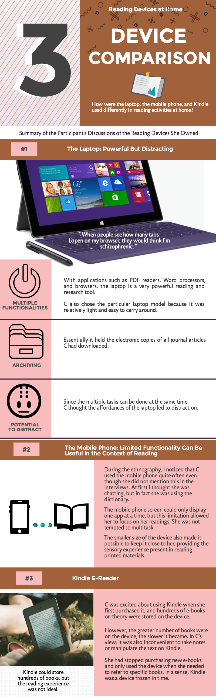

My discussions on technology at home would focus on reading devices. Below is an infographic1 that compares the three reading devices C owned.

Three Devices for Reading
As a user of technology, C's perceptions of the devices may have been different from what they were intended for. For instance, the laptop was created with robust features so that it could be an ideal personal computer, but those features became distracting during reading, which is an activity that needs concentration.
In contrast, the mobile phone was more limited in terms of functionality, but this limitation facilitated focus in C's case.
Kindle is another device with limited functionality, but the issues in performance and data portability were deemed as weaknesses by C, making her almost abandon the device altogether.
The Tactile Dimension of Usage
Another aspect of C's device usage which I had noticed was her tactile engagement with devices. The ability to swipe the touchscreen was one of the reasons why she purchased the particular laptop model. As for the mobile phone, its smaller size and touchscreen allowed her to better adapt it to her bodily practices while reading.
By the same token, she preferred reading journal articles (and books) in the print format instead of the electronic format because the former permitted more bodily engagement on her part. On the print format of articles, she could easily highlight certain texts in different colors, make notes on the margins, and even attach post-it notes if necessary; while most of these methods of interacting with the reading material is possible in the electronic files with modern-day PDF readers, the bodily practices to perform these tasks are not quite the same. Her preference echoes the findings of Taipale's (2015)2 study on the bodily dimensions of reading and writing practices, and the respondents reported more freedom in body postures when interacting with the print format.
It should be noted that C and the respondents in Taipale's (2015) used paper as the primary format in childhood before switching to the electronic format as young adults. For people who grow up using electronic texts, they may not see the less flexible bodily practices when reading and writing on devices as a limitation.
Ethnography Could Provide Insight for Better Product Design
All of the three devices had been with C for some time and were not brand new. The novelty effects have worn off, so what I had observed was more normalized, authentic usage. As Fink et al. (2013)3 had shown in their ethnography on Roomba the cleaning robot, ethnography of long-term product usage would reveal patterns unknown until users have tried to learn and adapt the product over a period of time. If the ethnography was aimed at user experience and was done with more focus and perhaps with a larger group, the findings could be used in the design of these devices.
The infographic was created on Piktochart. ↩
Taipale, S. (2015). Bodily dimensions of reading and writing practices on paper and digitally. Telematics and Informatics, 32(4), 766-775 ↩
Fink, J., Bauwens, V., Kaplan, F., & Dillenbourg, P. (2013). Living with a vacuum cleaning robot. International Journal of Social Robotics, 5(3), 389-408 ↩